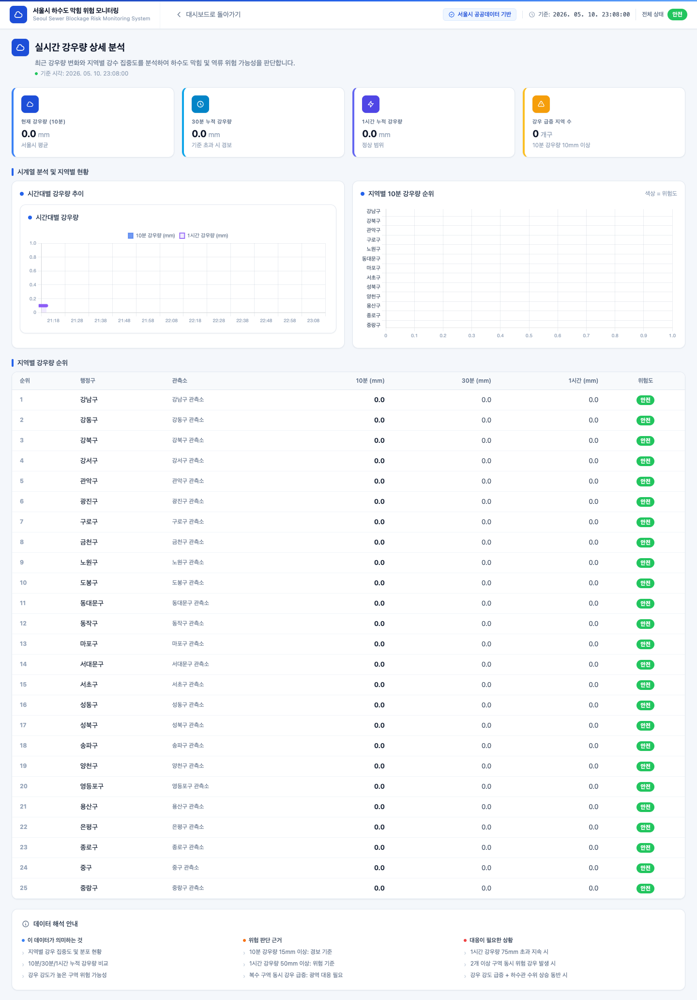
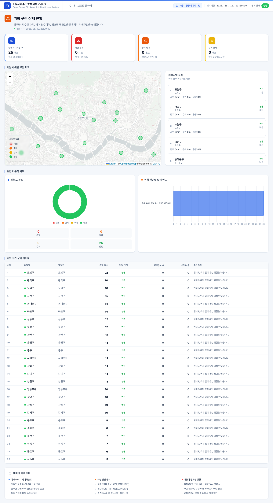
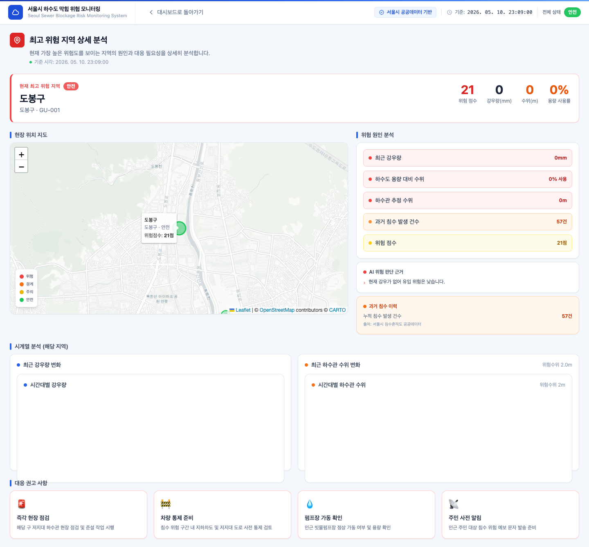

8
클릭 시 이동하는 상세 페이지 목록
KPI 카드 클릭 시 이동 — /rainfall · /sewer-level · /risk-zones · /highest-risk-area
/rainfall — 강우량 상세

/sewer-level — 하수관 수위 상세

/risk-zones — 위험 구간 전체 목록

/highest-risk-area — 최고 위험 지역 상세
